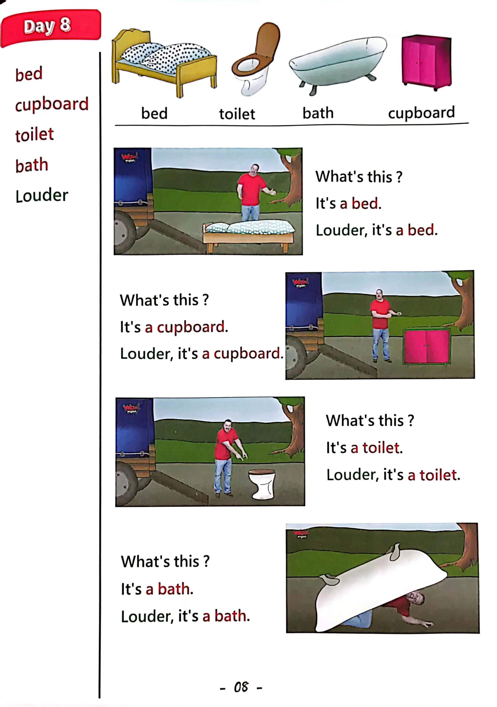

Day 8
Unit 3 · story
教材重点
教材重点依据网盘文件“第三级红色每日打卡全.pdf”，PDF 第 10 页对应 Day 8；以原图为准，避免对图片文字做不可靠的自动识别。
网盘教材重点原图 · PDF 第 10 页对应 Day 8

Unit 3 · story · 5–6岁
hello · bed · okay · look
Hello, hello, hello, hello, everyone. Hello. Hello.
台词本为机器转写，可能存在识别误差；不等同于视频逐字原声。
详细内容
Part 1 核心词汇
必须掌握 · 4 个Part 2 跟读句型与句型拓展
左侧保留台词本原句，右侧为替换练习；拓展内容不是视频逐字台词。
Hello, hello, hello, hello, everyone. Hello. Hello.
Hello. Hello.
Everyone say, hello. Everyone.
Bed, cupboard, toilet and bath.
Okay, back back back. Yeah, back back. Okay. Thanks.
Part 3 台词本全文
来源：第3级台词本 · 008.Wow!Red - Unit 3 'at home' - part 2 story_3_2.pdf。以下保留网盘 PDF 的机器转写文本，仅清理了文件路径页眉和空行。
Hello, hello, hello, hello, everyone. Hello. Hello.
Hello. Hello.
Everyone say, hello. Everyone.
Bed, cupboard, toilet and bath.
Okay, back back back. Yeah, back back. Okay. Thanks.
Boys and girls, I'm moving house, I need big, strong muscles for this job.
Have you got big muscles Have you got big muscles Show me, yeah, great.
But hey, it's time to get my furniture out of the lorry, don't worry, maggie's going to help, right? Let's
start.
What.
No,
Oh, okay, oh, okay, look, what's this.
It's a bed, so say it with me.
It's a bed, it's a bed, louder, it's a bed.
It's a bed, louder, it's a bed. It's a.
Well, done, okay, maggie, take the better way.
Right What's next The house.
No,
Hey, look, what's this.
Yeah, it's a cupboard, saving me. It's a cupboard.
It's a carbon louder, it's a cupboard louder, it's a carbon louder.
It's a cupboard, okay? Maggie put the cupboard in the house.
Okay, what's that guy? Oh, oh, wasn't it? Oh,
What's this?
It's a toilet, say it with me, come on, it's a toilet.
It's a toilet, louder, it's a toilet.
It's a toilet, louder, it's a toilet.
It's a toilet, yeah, oh, okay, maggie put the toilet in the house.
Right here we go again.
Go.
Oh, oh,
/
-
/3/008.Wow!Red - Unit 3 'at home' - part 2 story_3_2.txt[2022/3/29
星期二
6:47:14]
Look.
What's this here It's a bath, say with me, it's a bath.
It's a bath, louder, it's a bath.
It's a bath, louder, it's a bath.
It's a bath, yeah, oh,
Hey Maggie, oh, oh, coming.
Thank you, maggie, oh, that's better.
Oh, great, finished, OK, come on, then let's look inside my new house. Yeah?
Hey, wow, look, hey, hey, look, what's that?
Off, it's a toilet, A toilette here.
That's not right, oh dear, oh no.
Oh, oh, hey, what's wrong here?
Yeah, look, what's that What is it? Yeah, it's a bed, a bed here.
Oh dear, oh no.
Oh,
Hello, hey, is this okay?
Here, no, what is it What is it here It's a bath.
Oh dear, maggie has been very naughty. Where is Maggie?
Maggie, maggie.
Maggie, maggie, maggie, where is Maggie?
Oh,
Look, there's Maggie and what she got.
It's my cupboard, oh, maggie, you naughty and naughty bird put the cupboard in the house.
Okay, time to move the bed, the cupboard, the toilet and the bathe again. HA, back with my big muscles.
Bye bye, see next time home, maggie.